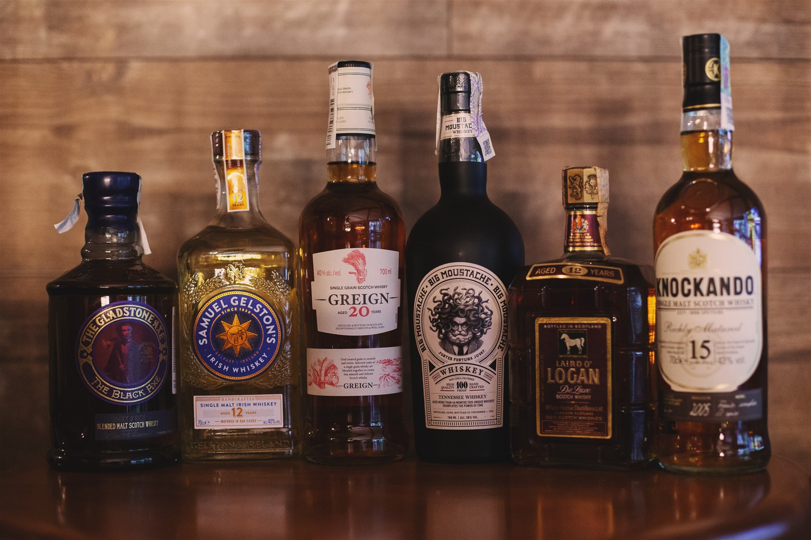

2,000 whiskies. One continuing journey.
2,000
The collection
02 / The collection
A world of character
Different origins.
Endless discovery.
The collection brings together core ranges and individual releases from whisky-producing regions around the world. Each bottle is an opportunity to explore a different place, style and point of view.

A selection prepared for a Whisky Academy tastingAcross whisky regions
Scotland · Ireland · Japan · India · Taiwan · France · Germany · Sweden · Italy · Switzerland · Spain · Belgium · Finland · Luxembourg · Israel · Australia · USA · Canada
A closer look
Whisky,
in the details.
The photographs show selected bottles and tasting settings from the project.
Discover more